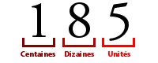

Cours
1) Le système décimal
Pour que vous compreniez le fonctionnement du binaire, et des systèmes de comptage en général (plus communément appelés bases), je vais commencer par faire une petite réintroduction à la base 10 que vous connaissez tous.
En effet, tout le monde sait compter en base 10 (décimal). Mais comment ça marche ? Comment est construit notre système ? Pour répondre à cette question à l'apparence simple, oubliez tout et reprenons depuis le début : comment avez-vous appris à compter à l'école ?
Vous penserez peut-être que la base 10 vient du fait qu'on a 10 doigts, mais en tout cas deux choses sont sûres :
Il y a 10 chiffres : 0, 1, 2, 3, 4, 5, 6, 7, 8, 9.
Avec ces derniers, on peut compter jusqu'à 9.
Et si l'on veut aller au-delà de 9, il faut changer de rang.
Cela signifie que si le rang des unités est plein, il faut passer à celui des dizaines, puis des centaines, milliers et j'en passe.
Par exemple : à 19, le rang des unités est "saturé" (plein), car il contient le chiffre 9, et il n'y a pas (dans la base 10) de valeur plus élevée. Il faut donc incrémenter le rang périphérique puis réinitialiser l'état de celui des unités. Ce qui signifie : j'ai 19, je ne peux pas mettre plus de 9 à droite, donc j'ajoute 1 à celui de gauche et je remets à zéro celui de droite.

Comme je disais tout à l'heure, le nombre entier va être composé de rangs (unités, dizaines, centaines, etc). Chaque rang vaut le rang précédent multiplié par l'indice de la base. Une centaine vaut dix dizaines, et une dizaine vaut 10 unités. Par exemple, dans l'image ci-dessus, on peut voir le nombre 18510 (ici, le 10 signifie qu'il s'agit d'un nombre, en base 10). Dans ce nombre, on peut voir trois rangs : centaines, dizaines et unités. Pour n'importe quelle base, la valeur d'un rang est égale à bn, où b est l'indice de la base (ici, 10) et n la position du rang. Ici, les unités ont la position 0, les dizaines la position 1 et les centaines la position 2. Nous pouvons donc écrire :
185=1∗102+8∗101+5∗100
Ce que je viens de faire, c'est décomposer 185 en puissance de 10 (unités, dizaines, centaines, etc).
Un nombre est égal à la somme des valeurs de ses rangs, et on peut décomposer n'importe quel nombre en puissance de sa base.
2) Le binaire
a) introduction
Le binaire, c'est le système de comptage des ordinateurs. Pourquoi le binaire et pas le décimal comme les humains ? Et bien c'est très simple : un ordinateur est composé de circuits électroniques, et donc de composants électriques. Le plus simple pour compter est donc d'utiliser un système en base 2 (le binaire) car on peut représenter ses deux valeurs possibles (0 et 1) par un signal électrique : 1, y'a du courant, 0, y'en a pas (c'est la version simple).
Je vous ai parlé ci-dessus de rangs. En binaire, c'est pareil à la différence qu'on utilise le terme bit, qui est la contraction de "binary digit", littéralement "chiffre binaire". Par exemple, le nombre 10011 occupe 5 bits. Là où tout se complique, c'est que comme je l'ai expliqué, chaque rang en binaire ne peut avoir que deux valeurs (binaire = base 2) différentes : 0 ou 1. Pour la base 10, chaque rang représente une puissance de 10, pour la base 2, chaque rang occupe une puissance de 2. Voici comment compter en binaire jusqu'à 10 :
| Nombre en décimal | Nombre en binaire | Le pourquoi du comment |
|---|---|---|
| 0 | 0 | Pour l'instant, ça va. |
| 1 | 1 | Là encore, c'est simple. |
| 2 | 10 | Le premier rang ayant été rempli, on passe au suivant ! |
| 3 | 11 | On re-remplit le rang 1. |
| 4 | 100 | Le rang 2 est plein, le rang 1 aussi, qu'à cela ne tienne, on passe au suivant. |
| 5 | 101 | On continue en suivant la même méthode. |
| 6 | 110 | On continue en suivant la même méthode. |
| 7 | 111 | On continue en suivant la même méthode. |
| 8 | 1000 | On commence le rang 4. |
| 9 | 1001 | On continue comme tout à l'heure. |
| 10 | 1010 | On continue comme tout à l'heure. |
| ... | ... | ... |
-
avec 1 bit on peut coder 2 valeurs (0 et 1)
-
avec 2 bits on peut coder 4 valeurs (00, 01, 10 et 11)
-
avec 3 bits on peut coder 8 valeurs (000, 001, 010, 011, 100, 101, 110, 111)
-
avec n bits on peut coder... 2n valeurs (vérifications : 21 = 2 ; 22 = 4 ; 23 = 8 ...)
Comme on a pu le voir, compter jusqu'à 10 ou 20 reste aisé, mais imaginons un instant que je vous demandasse d'écrire 185 en binaire ? Vous allez faire chaque rang, un par un ?
b) Conversion décimale binaire
Pour l'instant, on n'a compté que jusqu'à 10. Mais pour les plus grands nombres, la méthode précédente peut se révéler fastidieuse
La méthode :
Il existe bien sûr plusieurs méthodes de conversion, mais nous allons étudier la plus simple et la plus rapide. Il s'agit de la méthode euclidienne.
Cette méthode, en plus d'être facile à utiliser en programmation (c'est un algorithme) est une des meilleures lorsqu'il s'agit de traiter les grands nombres.
Voici la méthode :
On prend le nombre en base 10 (forme normale). On le divise par 2 et on note le reste de la division (soit 1 soit 0) On refait la même chose avec le quotient précédent, et on met de nouveau le reste de côté. On réitère la division, jusqu'à ce que le quotient soit 0. Le nombre en binaire apparaît alors : il suffit de prendre tous les restes de bas en haut. Et l'exemple :
185 = 2 x 92 + 1
92 = 2 x 46 + 0
46 = 2 x 23 + 0
23 = 2 x 11 + 1
11 = 2 x 5 + 1
5 = 2 x 2 + 1
2 = 2 x 1 + 0
1 = 2 x 0 + 1
Attention, il faut bien lire de bas en haut !
185 en base 10 vaut donc 10111001 en binaire.
c) Conversion binaire décimale
Je vous rassure tout de suite : c'est plus simple dans ce sens-là que dans l'autre.
Prenons un nombre au hasard, tel que 11010011. Il s'étale sur 8 rangs, et comme dit précédemment, chaque rang correspond à une puissance de deux. Le premier rang (en partant de la droite) est le rang 0, le second est le 1, etc.
Pour convertir le tout en décimale, on procède de la manière suivante : on multiplie par 20 la valeur du rang 0, par 21 la valeur du rang 1, par 22 la valeur du rang 2, [...], par 210 la valeur du rang 10, etc.
Après ça, il ne reste plus qu'à remplacer les puissances de 2 par leurs valeurs et de calculer la somme : (Attention à bien partir de la droite !) 11010011binaire=1∗1+1∗2+0∗4+0∗8+1∗16+0∗32+1∗64+1∗128=211décimal
3) L'hexadécimal
a) introduction
Le binaire, c'est bien pratique : on peut coder des nombres uniquement avec des 0 et des 1. C'est bien pour les signaux électriques et tout le bazar, mais dans la vie de tous les jours c'est pas bien facile d'utilisation. On utilise couramment la base 10. Le problème c'est qu'en informatique, tout est basé sur le binaire, et étant une base d'indice 2, c'est plus aisé d'encoder les informations sur un nombre multiple de 2. On utilise donc souvent la base 16, appelé système hexadécimal (hexa = 6, déci = 10, 16 = 6 + 10) car 16 est un multiple de 2, et qu'il permet de représenter 8 bits avec seulement 2 chiffres. Ça paraît simple, mais il y a un autre problème : en base 10, on utilise 10 chiffres. En base 2 (binaire) on utilise seulement 2 chiffres : 0 et 1. Mais du coup, en base 16, il faut 16 chiffres. OK, 0 1 2 3 4 5 6 7 8 9.. quoi après ? On prend des lettres de l'alphabet.
Ce qui donne :
0 1 2 3 4 5 6 7 8 9 A B C D E F
On peut établir une liste de correspondances entre la base 10 et la base 16 (voire même la base 2) :
| Binaire (base 2) | Décimal (base 10) | Hexadécimal (base 16) |
|---|---|---|
| 0 | 0 | 0 |
| 1 | 1 | 1 |
| 10 | 2 | 2 |
| 11 | 3 | 3 |
| 100 | 4 | 4 |
| 101 | 5 | 5 |
| 110 | 6 | 6 |
| 111 | 7 | 7 |
| 1000 | 8 | 8 |
| 1001 | 9 | 9 |
| 1010 | 10 | A |
| 1011 | 11 | B |
| 1100 | 12 | C |
| 1101 | 13 | D |
| 1110 | 14 | E |
| 1111 | 15 | F |
Comme vous pouvez le voir, le plus grand chiffre en hexadécimal est F, et il correspond à 15 en décimal et 1111 en binaire : F est donc encodé sur 4 bits (Fhex=1111bin, 4 chiffres binaires = 4 bits).
b) Convertir un nombre binaire en hexadécimal (et vice versa)
Pour convertir un nombre binaire en base 16, on regroupe les bits 4 à 4, chaque groupe donnant un chiffre hexadécimal. À l'inverse, passer d'un nombre hexadécimal à sa représentation binaire se fait en remplaçant chaque chiffre pour son équivalent sur 4 bits. Ainsi, 110110012=1101 10012=D916, tandis que 7F16=0111 11112=011111112.
Attention, si le nombre binaire de départ n'a pas un nombre de bits multiple de 4, il faut ajouter des zéros en tête (ce qui ne change pas sa valeur) afin de pouvoir les regrouper 4 par 4.
c) Convertir un nombre décimal en hexadécimal
Pour convertir un nombre décimal en hexadécimal, la méthode est similaire au binaire, sauf que cette fois on divise par 16.
185 = 16 x 11 + 9
11 = 16 x 0 + 11 (c'est à dire B)
Attention, il faut bien lire de bas en haut !
185 en base 10 vaut donc B9 en hexadécimal.
d) Convertir un nombre hexadécimal en décimal
Le principe est le même que pour la conversation "binaire en décimal" sauf qu'au lieu d'utiliser des 2n on utilise des 16n :
exemple :
12B716 = 1×163 + 2×162 + 11×161 + 7×160=1×4096 + 2×256 + 11×16 + 7= 4096 + 512 + 176 + 7 = 4791
Vous avez remarqué que quand on trouve un B dans le nombre écrit en hexadécimal, on le remplace par un 11 dans le calcul. C'est exactement la même chose quand on trouve :
-
un A, on le remplace par un 10
-
un C, on le remplace par un 12
-
un D, on le remplace par un 13
-
un E, on le remplace par un 14
-
un F, on le remplace par un 15